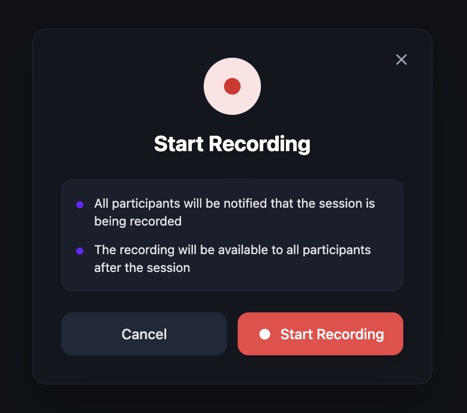
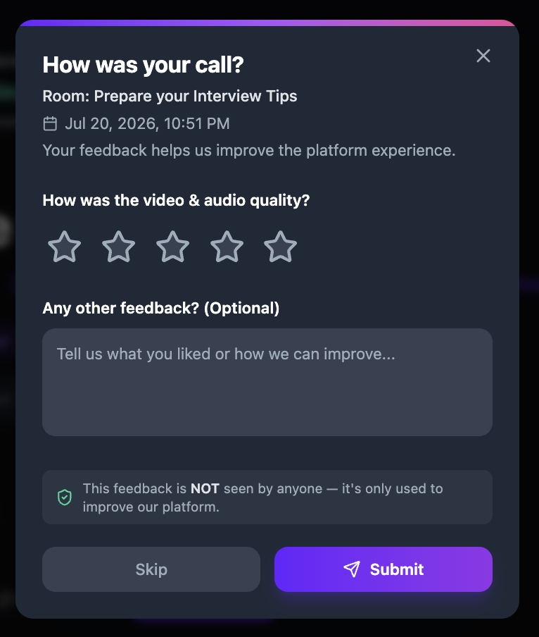

Manage a live room
Find your rooms, join a session, record the call, use the in-call toolbar, and access recordings after the session ends. This article covers the day-of workflow for scheduled video sessions and instant drop-in calls.
Before you get started
- You need an existing room. See Schedule a live session or Start an instant drop-in call.
- For webinar-specific controls (stage, audience, broadcast), see Host a webinar.
Access your rooms
All your rooms are accessible from your profile page.
- Click your avatar or name in the navigation to open your profile.
- Click the Rooms You Manage tab to see rooms you created or co-host.
- Click the Rooms You Joined tab to see rooms you registered for or attended.
- Click any room card to open its detail page.


Join a session
- On the room detail page, review the session title, date, time, and access tags.
- Click Join Session to enter the video call.
The room detail page also shows the share bar with Copy and Invite buttons, a Get Attendance Card link, and a View form responses link if a registration form is attached. Under About this Room, tabs for Recordings, Discussions, Members, and Polls let you manage room content before and after the session.

Use the call toolbar
Once inside a session, the call toolbar appears at the bottom of the screen. Hover near the bottom to reveal it if hidden.

The toolbar contains the following controls, from left to right:
- Microphone — toggle your mic on or off. Click the dropdown arrow to select a different audio input device.
- Camera — toggle your camera on or off.
- Screen Share — share your entire screen, an application window, or a browser tab.
- Raise Hand — signal that you want to speak. The host sees raised hands in order.
- Reactions — send a floating emoji reaction visible to all participants.
- Chat — open the chat panel to send text messages during the session.
- Polls — create and launch polls during the session. See Create polls in live sessions.
- Copy Event Link — copy the session link to your clipboard.
- Breakout Rooms (Beta) — split participants into smaller groups. See Create breakout rooms.
- More (three dots) — access background effects, recording, and live streaming controls.
- Leave (red) — leave the session or end it for everyone.
For a detailed walkthrough of every toolbar feature, see Use the video call toolbar.
Start a recording
Hosts and moderators can record video sessions and instant calls directly from the call toolbar. Webinars are recorded automatically when the broadcast starts.
- During a live session, click the More button (three dots) in the call toolbar.
- Select Record.
- A Start Recording dialog appears with two notes:
- All participants will be notified that the session is being recorded.
- The recording will be available to all participants after the session.
- Click Start Recording to begin. To cancel, click Cancel.

End a session
- Click the Leave button (red) at the far right of the call toolbar.
- A dialog asks how you want to leave:
- Leave (others stay) — you leave the session but other participants can continue.
- End for Everyone — the session ends immediately for all participants.
- Click your choice, or click Cancel to return to the session.

Post-call feedback
After a session ends, all participants see a feedback dialog.
- The dialog shows the room name and date, and asks "How was your call?"
- Rate the video & audio quality using a 1–5 star rating.
- Optionally enter text feedback in the "Any other feedback?" field.
- Click Submit to send your feedback, or Skip to dismiss.

Feedback is anonymous — it is not seen by anyone and is only used to improve the platform.
View feedback on your profile
Professional feedback you give and receive is saved to your profile. After meeting someone in a session, you can leave feedback on their profile, and feedback others leave for you appears on yours.
- Click your avatar or name in the navigation to open your profile.
- Click the Feedback tab.
- The tab shows two sections: Feedback You've Given and Feedback You've Received.

For more details on all profile tabs, see View your profile.
Access recordings after the session
Once a session ends, recordings appear on the room detail page.
- Navigate to the room detail page from your Rooms You Manage tab or from the session link.
- Click the Recordings tab under About this Room.
- Each recording card shows the session title, date, a video player preview, visibility settings, and a Change visibility dropdown.
- Click View Session to open the full recording page where you can play, download, share, or delete the recording.


For the full recording management workflow — including changing visibility, downloading, sharing, and renaming — see Manage recordings.
Manage room actions
Click the three-dot menu (⋮) in the top-right corner of the room detail page to access Edit Room, Cancel Room, and Delete Room. The availability of each option depends on the room's current state.
While a session is live
All three actions are restricted. Edit Room shows "Room started already," Cancel Room shows "Cannot cancel while live," and Delete Room shows "Cannot delete while live." End the session first by clicking Leave in the call toolbar and selecting End for Everyone.

When recordings exist
After the session ends, Edit Room and Cancel Room become available. However, Delete Room remains disabled and shows "Delete recordings first." You must delete all recordings before you can delete the room.

When no recordings exist
Once all recordings have been removed (or if the room was never recorded), all three actions are available. Delete Room appears in red.

Delete a recording
- Navigate to the room detail page and click the Recordings tab.
- Click View Session on the recording you want to delete.
- On the recording page, click Delete.
- A confirmation dialog warns that this action is irreversible — the recording, its comments, views, and all associated data will be permanently deleted and cannot be recovered.
- Type "I confirm" in the text field.
- Click Delete recording permanently. To cancel, click Cancel.

Delete a room
- On the room detail page, click the three-dot menu (⋮) and select Delete Room.
- A confirmation dialog warns that this action cannot be undone — the room, its recordings, discussions, polls, and every registration will be permanently deleted and cannot be recovered.
- Type the room's name to confirm deletion.
- Click Delete room permanently. To cancel, click Cancel.